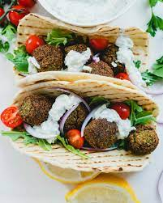

Odin Recipes Project
falafel

The sandwich Champions, there's old folk tales about Alexander the Great, Achilles and Genghis Khan were all searching for the true Palestinian Recipe for a true falafel sandwich during their takeover of the world
A falafel sandwich made with fresh Palestinian bread, correctly made hummos & special, top secret, Tahini sauce, along side a cup of freshly picked, mint tea is genuinely priceless
Ingredients
- Palestinian bread
- Falafel, freshly cooked
- Hummos, made with the traditional Palestinian Recipe
- Tahini sauce
- Mint Tea (regular tea is fine too)
Steps
- Step 1: Grab a Pita bread and spread some hummos on the top side
- Step 2: Smush 4 falafel balls on the hummos and make sure they are spread evenly
- Step 3: Spread some Tahini all over the falafels
- Step 4: (Optional) Make yourself a nice warm cup of tea, ideally, freshly picked mint tea
- Step 5: Enjoy!